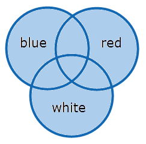

|
blue OR red OR white |
 |
|
Syntax |
Semantics |
Recommended Use |
|---|---|---|
|
left_query OR right_query (left_query) OR (right_query) |
Where OR combined two search queries such as a term, phrase or another query. For clarity, the queries can be placed between brackets. Please be aware that sometimes using brackets can influence the search results. |
The more terms you combine using OR, the more files you will find. It will broaden your search. |
|
left_query OR NOT right_query |
Where OR is added to the NOT operator to combine two queries. |
Narrow your search and exclude terms often connected to your search. |
|
"OR" |
Wrap the OR operator in double quotes, so it loses its special meaning. |
If you want to search for the word 'or'. |
Examples
|
Example of Query |
Results |
Results Explained |
|---|---|---|
|
car OR transportation |
only 'car'
|
|
|
u.s OR us |
Only 'u.s', only 'us', or files with both instances. |
The search result 'u.s' can be followed by a - not highlighted - dot. |
|
e mail OR email |
only 'e mail', 'email' or 'e-mail' only 'e mail' and 'e-mail' only 'email' and 'e-mail' only 'e mail' and 'email' 'e mail', 'email', and 'e-mail' |
Phrase query combined with term. Hyphenated instances of both phrase and term are also found.
|
|
apple OR NOT pear |
Files that contain the term 'apple' (the term 'pear' can be present in the file, but not highlighted) and files that do not contain the term 'pear' (no hits, since 'apple' is not present either). |
|
Tip : If you have a very long OR query like 'aa* or ac* or ad* or ae* or af* or ag* or ah* or ai* or aj* or ak*', use the Quorum operator instead to improve performance: ' 1 of {aa*, ac*, ad*, ae*, af*, ag*, ah*, ai*, aj*, ak*}'.